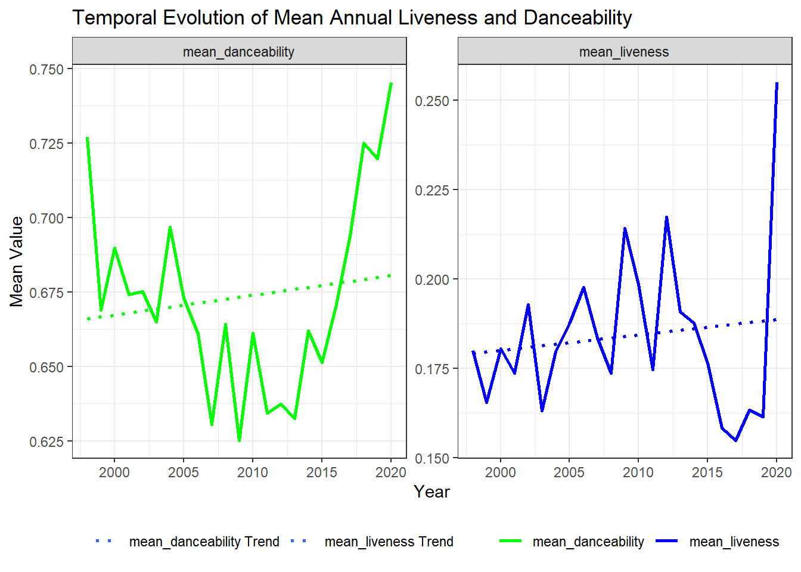
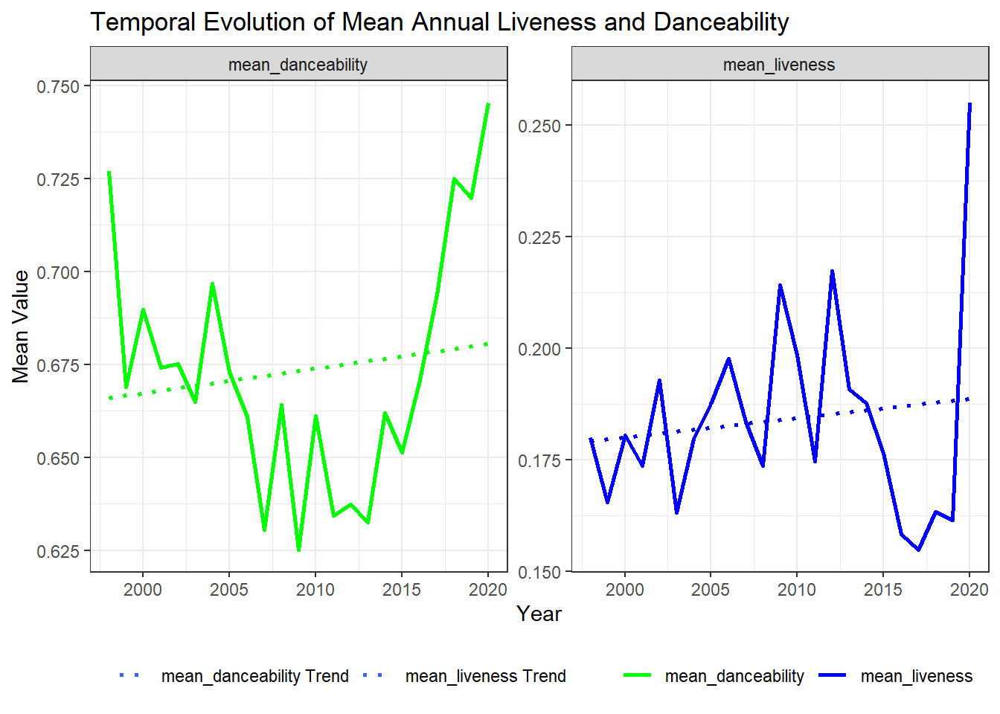

Warning: Using `size` aesthetic for lines was deprecated in ggplot2 3.4.0.
ℹ Please use `linewidth` instead.`geom_smooth()` using formula = 'y ~ x'
This is my public GitHub URL: https://github.com/kaderrsami/spotify_dropout
We are reading in the Spotify dataset and then identifying the number of unique songs, artists, and genres.
The data set contains 1926 unique songs, 835 unique artists, and 59 unique genres. This gives us a broad view of the data’s diversity.
Here, we are grouping the Spotify dataset by year and finding the number of distinct artists for each year.
| Year | Number of Distinct Artists |
|---|---|
| 1998 | 1 |
| 1999 | 30 |
| 2000 | 58 |
| 2001 | 77 |
| 2002 | 56 |
| 2003 | 64 |
| 2004 | 65 |
| 2005 | 69 |
| 2006 | 63 |
| 2007 | 66 |
| 2008 | 63 |
| 2009 | 61 |
| 2010 | 62 |
| 2011 | 69 |
| 2012 | 67 |
| 2013 | 64 |
| 2014 | 70 |
| 2015 | 69 |
| 2016 | 75 |
| 2017 | 86 |
| 2018 | 81 |
| 2019 | 73 |
| 2020 | 3 |
This table shows the number of distinct artists contributing to the music landscape each year. Trends in these numbers can potentially inform us about the industry’s evolution.
We are identifying the most popular artist in the dataset based on the number of unique songs.
The most popular artist in the data set is Rihanna with 23 unique songs, indicating a significant contribution to the musical landscape.
This question aims to calculate various statistics related to the ‘tempo’ of songs, grouped by genre.
| Genre | Minimum Tempo | Maximum Tempo | Average Tempo | Median Tempo | Number of Songs |
|---|---|---|---|---|---|
| Dance/Electronic | 75.255 | 179.642 | 125.5075 | 126.0410 | 41 |
| Folk/Acoustic, pop | 94.931 | 128.945 | 111.9380 | 111.9380 | 2 |
| Folk/Acoustic, rock | 84.192 | 84.192 | 84.1920 | 84.1920 | 1 |
| Folk/Acoustic, rock, pop | 138.585 | 138.585 | 138.5850 | 138.5850 | 1 |
| R&B | 71.815 | 170.661 | 106.9248 | 100.4600 | 13 |
| World/Traditional, Folk/Acoustic | 82.803 | 82.803 | 82.8030 | 82.8030 | 1 |
| World/Traditional, hip hop | 98.077 | 101.993 | 100.0350 | 100.0350 | 2 |
| World/Traditional, pop | 108.102 | 108.102 | 108.1020 | 108.1020 | 1 |
| World/Traditional, pop, Folk/Acoustic | 100.380 | 104.833 | 102.6065 | 102.6065 | 2 |
| World/Traditional, rock | 96.000 | 140.083 | 118.0415 | 118.0415 | 2 |
| World/Traditional, rock, pop | 132.013 | 139.048 | 135.5305 | 135.5305 | 2 |
| country | 103.055 | 205.570 | 138.1508 | 136.0020 | 9 |
| country, latin | 96.055 | 96.055 | 96.0550 | 96.0550 | 1 |
| easy listening | 157.920 | 157.920 | 157.9200 | 157.9200 | 1 |
| hip hop | 64.934 | 179.974 | 116.9894 | 111.6795 | 120 |
| hip hop, Dance/Electronic | 95.948 | 190.151 | 135.4297 | 131.0500 | 15 |
| hip hop, R&B | 100.215 | 151.181 | 121.1220 | 111.9700 | 3 |
| hip hop, country | 97.984 | 97.984 | 97.9840 | 97.9840 | 1 |
| hip hop, latin, Dance/Electronic | 171.993 | 171.993 | 171.9930 | 171.9930 | 1 |
| hip hop, pop | 73.003 | 203.911 | 118.9619 | 119.9750 | 265 |
| hip hop, pop, Dance/Electronic | 72.022 | 196.093 | 120.8555 | 126.0620 | 75 |
| hip hop, pop, R&B | 60.019 | 203.862 | 115.1808 | 107.2030 | 234 |
| hip hop, pop, R&B, Dance/Electronic | 82.820 | 127.901 | 103.9113 | 101.0130 | 3 |
| hip hop, pop, R&B, latin | 82.331 | 100.010 | 91.1705 | 91.1705 | 2 |
| hip hop, pop, country | 129.370 | 129.370 | 129.3700 | 129.3700 | 1 |
| hip hop, pop, latin | 89.661 | 180.184 | 127.2119 | 127.0265 | 14 |
| hip hop, pop, rock | 84.858 | 179.999 | 123.1123 | 125.2500 | 9 |
| hip hop, rock, pop | 90.052 | 90.052 | 90.0520 | 90.0520 | 1 |
| latin | 90.013 | 198.075 | 121.6049 | 97.0620 | 15 |
| metal | 79.012 | 147.387 | 106.2089 | 101.9680 | 9 |
| pop | 65.043 | 195.685 | 120.6325 | 119.9520 | 411 |
| pop, Dance/Electronic | 84.878 | 198.065 | 123.7314 | 124.0800 | 213 |
| pop, Folk/Acoustic | 76.026 | 171.790 | 118.3595 | 109.9505 | 8 |
| pop, R&B | 68.942 | 210.851 | 117.0158 | 111.9645 | 170 |
| pop, R&B, Dance/Electronic | 84.021 | 176.051 | 112.0338 | 104.0865 | 6 |
| pop, R&B, easy listening | 108.984 | 108.984 | 108.9840 | 108.9840 | 1 |
| pop, country | 97.865 | 147.905 | 130.5087 | 136.9250 | 8 |
| pop, easy listening, Dance/Electronic | 135.099 | 135.099 | 135.0990 | 135.0990 | 1 |
| pop, easy listening, jazz | 82.168 | 127.831 | 104.9995 | 104.9995 | 2 |
| pop, latin | 79.997 | 177.833 | 113.5903 | 104.2540 | 28 |
| pop, rock | 77.967 | 176.667 | 121.0976 | 119.0095 | 26 |
| pop, rock, Dance/Electronic | 87.016 | 189.857 | 133.9808 | 135.9875 | 12 |
| pop, rock, Folk/Acoustic | 102.961 | 112.960 | 107.9605 | 107.9605 | 2 |
| pop, rock, metal | 82.952 | 155.827 | 128.9358 | 134.7165 | 14 |
| rock | 74.989 | 199.935 | 129.5312 | 123.6960 | 57 |
| rock, Dance/Electronic | 127.988 | 127.988 | 127.9880 | 127.9880 | 1 |
| rock, Folk/Acoustic, easy listening | 122.979 | 122.979 | 122.9790 | 122.9790 | 1 |
| rock, Folk/Acoustic, pop | 80.529 | 80.529 | 80.5290 | 80.5290 | 1 |
| rock, R&B, Folk/Acoustic, pop | 105.987 | 105.987 | 105.9870 | 105.9870 | 1 |
| rock, blues | 123.904 | 141.933 | 132.9185 | 132.9185 | 2 |
| rock, blues, latin | 97.911 | 127.981 | 112.9460 | 112.9460 | 2 |
| rock, classical | 81.663 | 81.663 | 81.6630 | 81.6630 | 1 |
| rock, easy listening | 114.999 | 114.999 | 114.9990 | 114.9990 | 1 |
| rock, metal | 89.342 | 187.961 | 127.3922 | 120.0555 | 36 |
| rock, pop | 68.976 | 184.086 | 123.8996 | 124.9700 | 39 |
| rock, pop, Dance/Electronic | 113.049 | 181.994 | 135.7678 | 127.4480 | 8 |
| rock, pop, metal | 126.115 | 152.034 | 140.2785 | 141.4825 | 4 |
| rock, pop, metal, Dance/Electronic | 105.013 | 105.013 | 105.0130 | 105.0130 | 1 |
| set() | 68.507 | 184.819 | 120.1329 | 126.9620 | 22 |
This table provides insights into the tempo characteristics of different genres. This can be useful for research related to musical patterns.
Here, we are calculating the yearly mean for ‘liveness’ and ‘danceability’ in the songs.
| Year | Mean Liveness | Mean Danceability |
|---|---|---|
| 1998 | 0.1800000 | 0.7270000 |
| 1999 | 0.1656000 | 0.6689737 |
| 2000 | 0.1805216 | 0.6898243 |
| 2001 | 0.1736685 | 0.6741296 |
| 2002 | 0.1928467 | 0.6752444 |
| 2003 | 0.1631701 | 0.6648763 |
| 2004 | 0.1796552 | 0.6968333 |
| 2005 | 0.1875663 | 0.6729231 |
| 2006 | 0.1976642 | 0.6608632 |
| 2007 | 0.1836223 | 0.6305213 |
| 2008 | 0.1737474 | 0.6641856 |
| 2009 | 0.2141405 | 0.6251667 |
| 2010 | 0.1986150 | 0.6610748 |
| 2011 | 0.1747636 | 0.6344040 |
| 2012 | 0.2173391 | 0.6373652 |
| 2013 | 0.1908663 | 0.6326404 |
| 2014 | 0.1876317 | 0.6619327 |
| 2015 | 0.1765152 | 0.6512626 |
| 2016 | 0.1583172 | 0.6707071 |
| 2017 | 0.1549054 | 0.6937387 |
| 2018 | 0.1634561 | 0.7250374 |
| 2019 | 0.1615809 | 0.7197640 |
| 2020 | 0.2550000 | 0.7453333 |
This table reveals the average liveness and danceability of songs year by year, which might help in analyzing trends in music preferences.
We visualize the yearly mean values of ‘liveness’ and ‘danceability’ to understand their temporal evolution.
Warning: Using `size` aesthetic for lines was deprecated in ggplot2 3.4.0.
ℹ Please use `linewidth` instead.`geom_smooth()` using formula = 'y ~ x'
From the graph, the following conclusions and observations can be made:
Mean danceability has remained relatively consistent over the 20-year period, hovering around 0.75. There are minor fluctuations, but no significant upward or downward trend is observed. This suggests that the danceability of songs has remained relatively stable over the years. Mean liveness has shown more variability over the years. The value was mostly stable from 2000 to around 2014 but has seen a sharp increase from 2015 onwards, peaking around 2020, with a mean of 0.26.
There’s a noticeable uptick in the mean liveness value from 2015 onwards. This sudden rise could be indicative of a change in the music industry, where more live or live-feeling recordings made it to the top hits on Spotify. Another interpretation could be that the method of measuring ‘liveness’ changed or the way music was produced shifted.
For the majority of the years, the danceability of songs has been considerably higher than their liveness. This could suggest that, historically, top hits on Spotify have been more geared towards tracks that are catchy and easy to dance to rather than tracks that have a live performance feel. However, as we approach 2020, the gap between danceability and liveness starts to narrow, indicating a shift in preference or production towards songs with a more live-feeling.
We are grouping the dropout dataset by ‘Target’ and ‘Marital Status’ and finding the median ‘Admission Grade’ for these groups.
`summarise()` has grouped output by 'Target'. You can override using the
`.groups` argument.| Target | Marital status | Median Admission |
|---|---|---|
| Dropout | single | 123.35 |
| Dropout | married | 126.50 |
| Dropout | divorced | 126.50 |
| Dropout | widower | 129.40 |
| Dropout | facto union | 119.40 |
| Dropout | legally separated | 112.50 |
| Graduate | single | 127.30 |
| Graduate | married | 130.00 |
| Graduate | divorced | 126.00 |
| Graduate | widower | 170.00 |
| Graduate | facto union | 120.00 |
| Graduate | legally separated | 114.80 |
| Enrolled | single | 124.05 |
| Enrolled | married | 122.95 |
| Enrolled | divorced | 130.20 |
| Enrolled | widower | 151.75 |
| Enrolled | facto union | 119.70 |
| Enrolled | legally separated | 119.00 |
This table allows us to examine how median admission grades vary between different target and marital status groups.
We are transforming the data to compare the ‘Median Admission Grade’ across marital statuses for each target group.
| Marital status | Dropout | Graduate | Enrolled |
|---|---|---|---|
| single | 123.35 | 127.3 | 124.05 |
| married | 126.50 | 130.0 | 122.95 |
| divorced | 126.50 | 126.0 | 130.20 |
| widower | 129.40 | 170.0 | 151.75 |
| facto union | 119.40 | 120.0 | 119.70 |
| legally separated | 112.50 | 114.8 | 119.00 |
Among the dropouts, widowers have the highest median admission grade at 129.40, followed closely by those who are divorced and married. Singles have a median grade of 123.35, while those in a facto union or legally separated have the lowest median admission grades at 119.40 and 112.50 respectively.
Among the graduates, the marital status with the highest median admission grade is widower, with a significantly high score of 170. Married individuals follow at 130.0. It’s worth noting the vast difference between widowers and the rest in this category.
For those enrolled, the divorced group leads with a median grade of 130.20, whereas those in a facto union and legally separated have the lowest median grades, both being under 120.
It appears that, on average, widowers tend to perform exceptionally well in terms of median admission grades when compared to other marital statuses, especially among graduates. The reasons for this might be varied and would require deeper investigation. Also, those who are legally separated or in a facto union generally have the lowest median admission grades across all target outcomes.
Here, we are calculating the median of all curricular units, grouped by gender.
| Gender | CU 1S Cred | CU 1S Enr | CU 1S Eval | CU 1S Appr | CU 1S Grade | CU 1S No Eval | CU 2S Cred | CU 2S Enr | CU 2S Eval | CU 2S Appr | CU 2S Grade | CU 2S No Eval |
|---|---|---|---|---|---|---|---|---|---|---|---|---|
| Male | 0 | 6 | 8 | 4 | 11.83333 | 0 | 0 | 6 | 8 | 4 | 11.63604 | 0 |
| Female | 0 | 6 | 8 | 6 | 12.50000 | 0 | 0 | 6 | 8 | 5 | 12.50000 | 0 |
Here is a breakdown of the symbols and abbreviations used in the code for table:
CU: Stands for “Curricular Units,” denoting the subject or course components.
1S: Abbreviation for “1st Semester,” indicating the period or term of the course.
2S: Abbreviation for “2nd Semester,” indicating the period or term of the course.
Cred: Short for “credited,” representing the units that have been credited to the student.
Enr: Stands for “enrolled,” showing the number of units the student is currently enrolled in.
Eval: Short for “evaluations,” showing the number of units for which the student has been evaluated.
Appr: Stands for “approved,” indicating the units that the student has passed or been approved for.
Grade: Indicates the grade received by the student for a particular curricular unit.
No Eval: Short for “without evaluations,” denoting the units that have not been evaluated.
This table provides a gender-based view on the median values of different curricular units, shedding light on academic performance disparities if any.
We are pivoting the data to a long format and then back to a wide format to calculate median values for curricular units by gender.
| Units | Male | Female |
|---|---|---|
| Curricular units 1st sem (credited) | 0.00000 | 0.0 |
| Curricular units 1st sem (enrolled) | 6.00000 | 6.0 |
| Curricular units 1st sem (evaluations) | 8.00000 | 8.0 |
| Curricular units 1st sem (approved) | 4.00000 | 6.0 |
| Curricular units 1st sem (grade) | 11.83333 | 12.5 |
| Curricular units 1st sem (without evaluations) | 0.00000 | 0.0 |
For credited curricular units in the first semester, both males and females have a median value of 0 and 0 respectively, implying no credited units on average.
Both males and females are enrolled in 6 and 6 curricular units on average in the first semester.
The evaluations of curricular units in the first semester for males and females are 8 and 8 respectively, indicating equal performance.
For approved curricular units in the first semester, males have a median value of 4, while females have a median value of 6, suggesting that females tend to outperform males.
The median grade for curricular units in the first semester for males is 11.8333333, and for females, it’s 12.5.
For curricular units in the first semester without evaluations, both genders have a median of 0 and 0 respectively.
From the data, we can infer that, in terms of curricular units, females tend to have slightly better academic performance, especially in the context of approved units and grades. The differences, however, are not vast and might not be statistically significant, depending on the data distribution and sample size.